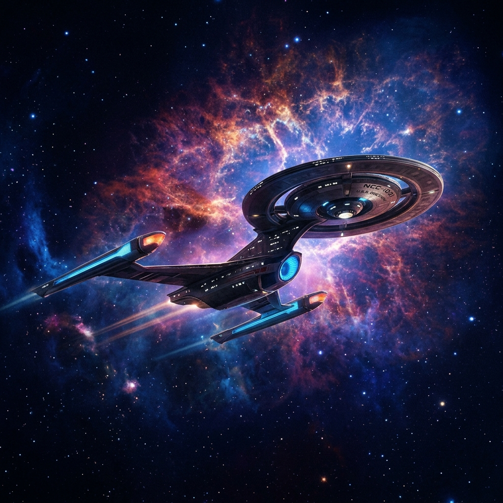
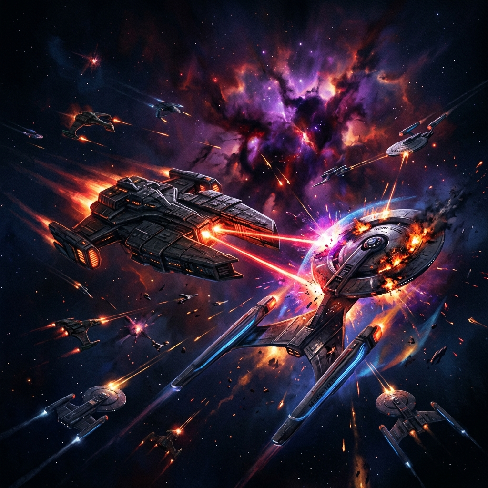
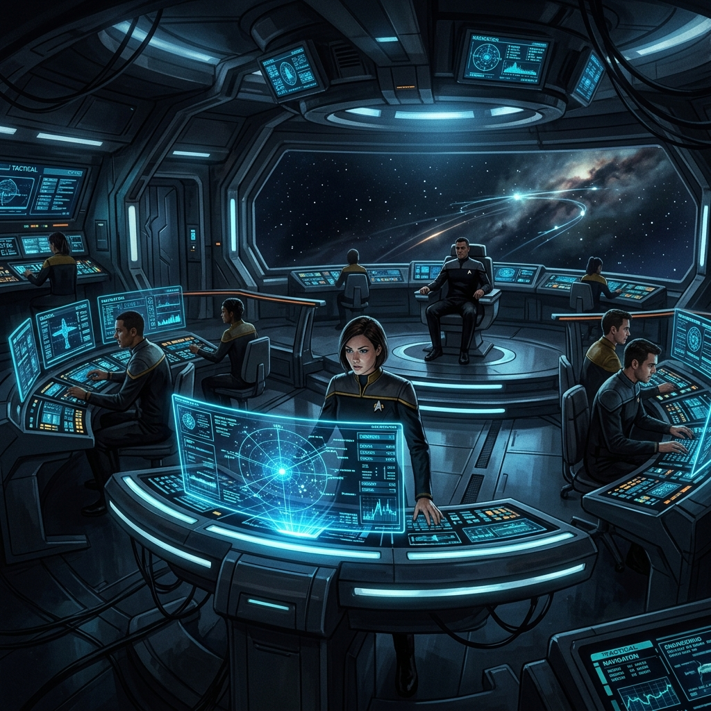
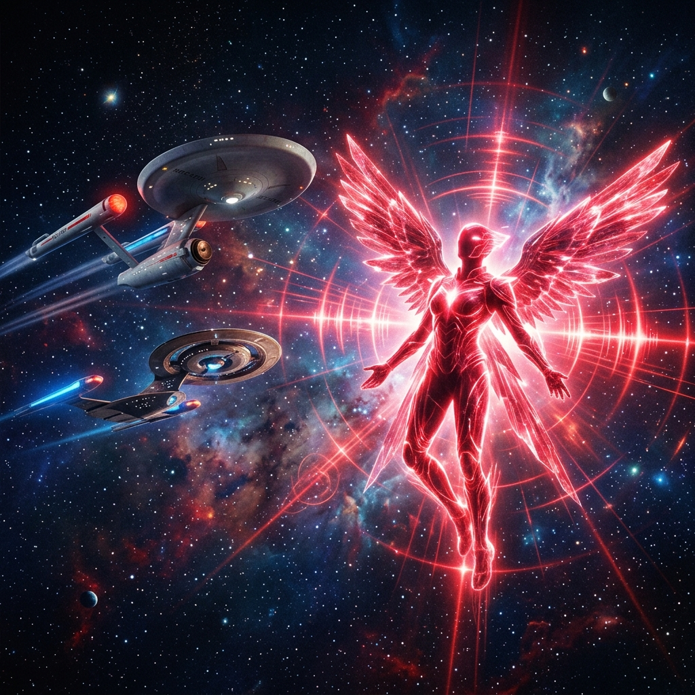
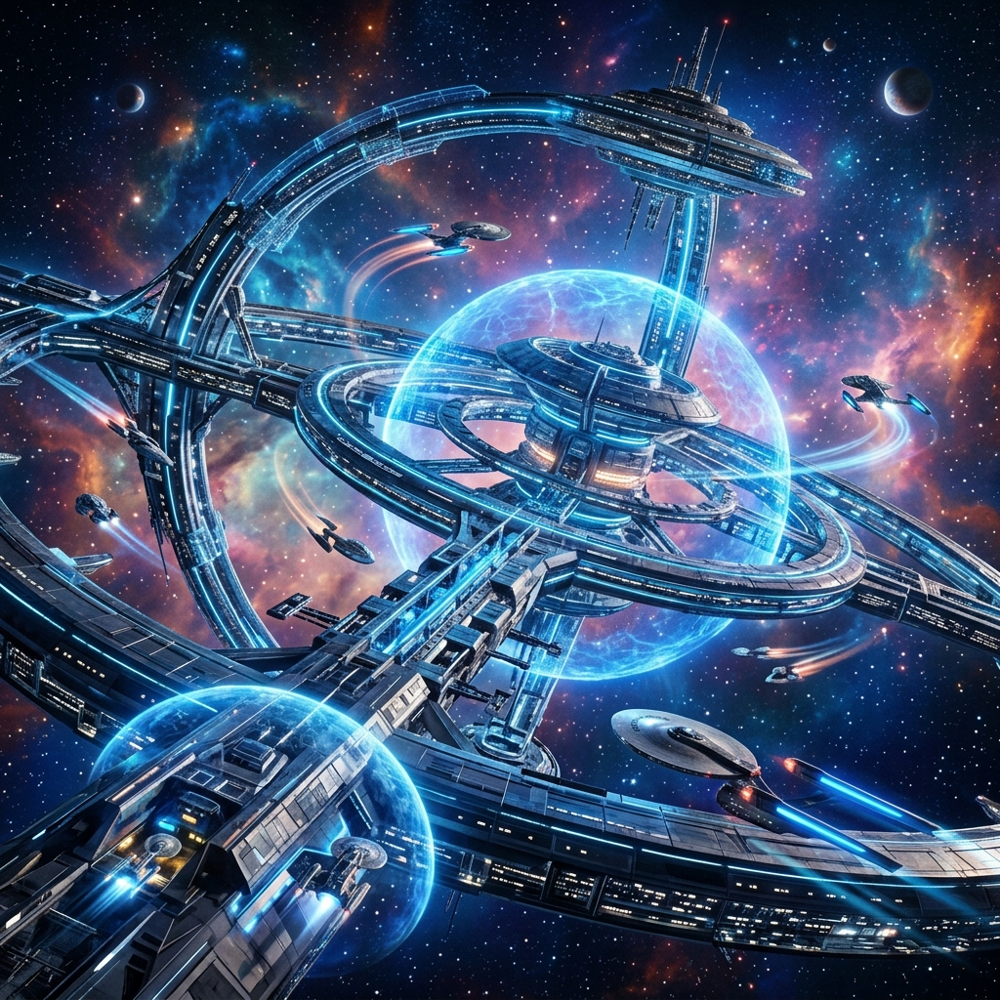

Galeria de Imagens
Uma seleção das melhores imagens do universo Star Trek Discovery. Passe o mouse sobre as imagens para ver as legendas.

USS Discovery — A nave principal da série

Temporada 1 — A Guerra Klingon

Ponte de Comando — O centro da Discovery

USS Enterprise — Nave lendária de Star Trek

Temporada 2 — O misterioso Anjo Vermelho

Temporada 3 — A Federação no Século 32
Sobre as Imagens
Temporada 1
Cenas épicas de batalha entre a Starfleet e as forças Klingon, em uma guerra que ameaçou toda a Federação.
Temporada 2
A figura enigmática do Anjo Vermelho guia a tripulação por sete sinais misteriosos espalhados pela galáxia.
Temporada 3
A tecnologia do século 32 impressiona com estações orbitais colossais e campos de energia avançados.